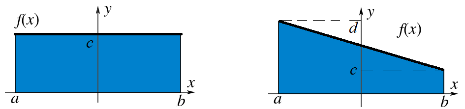
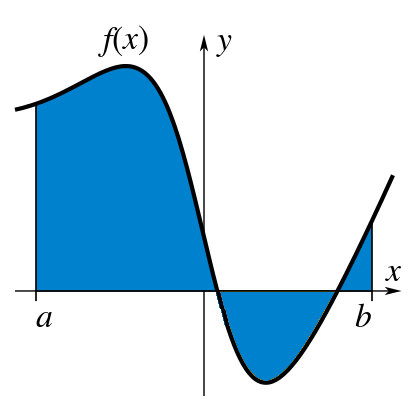
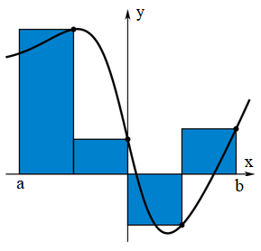
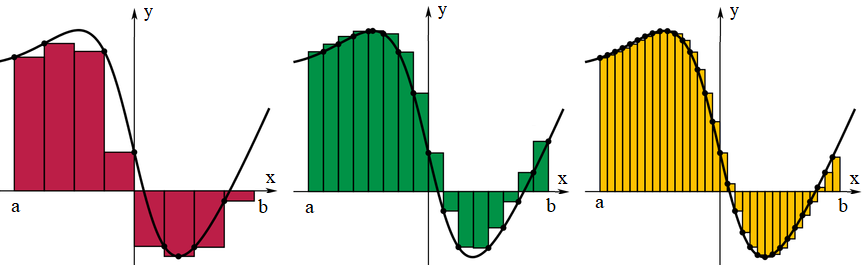
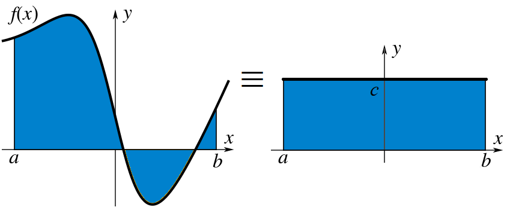
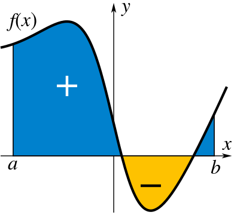
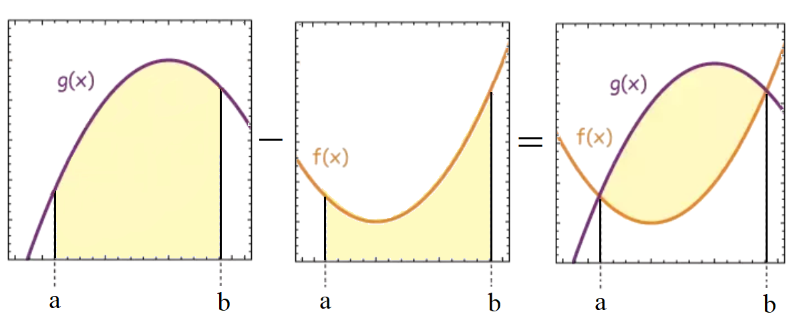

Areas and Integration#
Definition of Integration#
Let’s start with a function \( f(x) \), suppose we are interested in finding the area between the \( x \) axis and the function? If the function is constant or at least linear, this is fairly straightforward:

If the function is more complicated, say a polynomial, then we can break up the function interval \( x \in [a,\,b] \) into small rectangular segments and then sum them all up:
 
Clearly, this is just an estimate of the function area, although we can improve this estimate by chopping up the interval into smaller segments:

If we break up \( [a,\,b] \) into \( N \) intervals, of uniform width \( \Delta x \):
then over the interval sliced up into \( N \) pieces:
The total area under the function is:
We can now take the limit of \( \Delta x \rightarrow 0 \) to get an infinitesimal \( \mathrm{d}x \), so we can go from summing up small finite areas to infinitesimal areas:
We call this quantity the Integral of the function \( f(x) \) between the limits \( [a,\,b] \), and the symbol \( \int \) is known as the Integration Operator. The function \( f(x) \) here is also called the Integrand and the process of finding an integral is known as Integration.
Definite and Indefinite Integrals#
Indefinite Integrals#
An indefinite integral represents a family of functions and is denoted as:
It gives the antiderivative, which is a function whose derivative is \( f(x) \). The result always includes a constant \( C \), since the derivative of a constant is zero.
Definite Integrals#
A definite integral computes the area under the curve of \( f(x) \) from \( x = a \) to \( x = b \) and is denoted as:
The result of a definite integral is a number and represents the net area under the curve between the limits \( a \) and \( b \).
Fundamental Theorem of Calculus (FTC)#
The Fundamental Theorem of Calculus connects differentiation and integration and has two parts:
Part 1: If \( f(x) \) is continuous on \([a, b]\), then the function \( F(x) \), defined by:
\[F(x) = \int_a^x f(t) \, \mathrm{d}t\]is continuous on \([a, b]\), differentiable on \((a, b)\), and \( F'(x) = f(x) \).
Part 2: If \( f(x) \) is continuous on \([a, b]\), then:
\[\int_a^b f(x) \, \mathrm{d}x = F(b) - F(a)\]where \( F(x) \) is any antiderivative of \( f(x) \).
Common Methods for Finding Antiderivatives#
Polynomial Functions#
For polynomials, the integral is straightforward using the power rule for integration:
Trigonometric Functions#
For simple trigonometric functions, use the following standard integrals:
- \[\int \sin(x) \, \mathrm{d}x = -\cos(x) + C\]
- \[\int \cos(x) \, \mathrm{d}x = \sin(x) + C\]
Exponential Functions#
For exponential functions, the general rule is:
For base \( b \) exponentials:
Where does this come from? Remember that we can write:
Hence if we exponentiate both sides:
So taking the integral of this means:
Logarithmic Functions#
For logarithmic functions, the integral of the reciprocal function is:
Reversing Differentiation Rules into Integration#
In addition to the basic rules for calculating antiderivatives, there are specific techniques that arise when you reverse common differentiation rules, such as the product rule and the chain rule. These techniques help solve integrals that might otherwise be difficult.
Integration by Parts (Product Rule Reversal)#
The product rule for differentiation states:
When reversing this rule to solve integrals, we use integration by parts. The formula for integration by parts is:
In this formula:
\( u(x) \) is a function you choose to differentiate (its derivative is \( u'(x) \)),
\( v'(x) \) is the function you choose to integrate (its integral is \( v(x) \)).
Steps for using integration by parts:
Identify parts of the integrand to assign to \(u(x)\) and \(v'(x)\).
Differentiate \(u(x)\) to get \(u'(x)\).
Integrate \(v'(x)\) to get \(v(x)\).
Substitute into the formula and simplify the resulting integral.
LATE Method for Integration by Parts#
The LATE method is a mnemonic that can help choose the best parts of the integrand to assign to \( u(x) \) and \( v'(x) \) when using integration by parts. The letters stand for:
L: Logarithmic functions (if present)
A: Algebraic functions (polynomials)
T: Trigonometric functions
E: Exponential functions
Steps for using LATE:
First, choose \( u(x) \) from the category that appears first in LATE.
Choose \( v'(x) \) from the remaining part of the integrand.
Apply integration by parts as usual.
Example 1: Polynomial and Exponential#
Consider the integral:
Using the LATE method:
\( u(x) = x \) (Algebraic function)
\( v'(x) = e^x \) (Exponential function)
Now, differentiate \( u(x) \) and integrate \( v'(x) \):
\( u'(x) = 1 \)
\( v(x) = e^x \)
Now apply the formula for integration by parts:
Example 2: Trigonometric and Exponential#
Consider the integral:
Using the LATE method:
\( u(x) = \sin(x) \) (Trigonometric function)
\( v'(x) = e^x \) (Exponential function)
Now, differentiate \( u(x) \) and integrate \( v'(x) \):
\( u'(x) = \cos(x) \)
\( v(x) = e^x \)
Now apply the formula for integration by parts:
Now, we need to apply integration by parts again to the new integral \( \int e^x \cos(x) \, \mathrm{d}x \). Using LATE again:
\( u(x) = \cos(x) \)
\( v'(x) = e^x \)
Following the same steps:
Thus, we end up with an equation involving the original integral. Solving this, we obtain the result:
Mean Value Theorem for Integrals#
The Mean Value Theorem for Integrals states that if \( f(x) \) is continuous on the interval \( [a, b] \), then there exists at least one point \( c \in [a, b] \) such that:
This means that the average value of the function over the interval is equal to the value of the function at some point \( c \) within the interval. This can be helpful when interpreting integrals in terms of average values.
We can see this graphically: 
Signed and Unsigned Areas#
Introduction#
The concept of signed and unsigned areas is important when dealing with integrals, particularly in the context of areas between curves or under curves in the plane.
Unsigned Area refers to the total geometric area between a curve and the x-axis, treating all areas as positive, regardless of whether the curve is above or below the axis.
Signed Area considers the direction of the curve relative to the x-axis. Areas above the x-axis are positive, and areas below the x-axis are negative.
Geometric Interpretation#
Unsigned Area: The total area between the curve and the x-axis is computed without considering whether the curve is above or below the x-axis. All areas are treated as positive.
Signed Area: This accounts for whether the curve is above or below the x-axis. The area above the x-axis is positive, and the area below the x-axis is negative. The signed area is useful for determining net area, like in physical applications where direction matters (e.g., work or displacement).
We can see this in the figure below: 
Unsigned Area#
The unsigned area between a curve and the x-axis is calculated by taking the absolute value of the integrand, ensuring that no part of the area contributes negatively.
Formula for Unsigned Area:
\[\text{Unsigned Area} = \int_a^b \left| f(x) \right| \, dx\]where \( f(x) \) is the function describing the curve.
Example of Unsigned Area#
Find the unsigned area between the curve \(y = x^2 - 4\) and the x-axis from \(x = -3\) to \(x = 3\).
Step 1: Identify the points where the curve intersects the x-axis. Set \( f(x) = 0 \):
\[x^2 - 4 = 0 \quad \Rightarrow \quad x = \pm 2\]So, the curve intersects the x-axis at \(x = -2\) and \(x = 2\).
Step 2: Break the integral into two parts, where the curve is either above or below the x-axis.
\[\text{Unsigned Area} = \int_{-3}^{-2} \left| x^2 - 4 \right| \, dx + \int_{-2}^{2} \left| x^2 - 4 \right| \, dx + \int_{2}^{3} \left| x^2 - 4 \right| \, dx\]Since \(x^2 - 4\) is negative between \([-3, -2]\) and \([2, 3]\), we use the absolute value to change the sign:
\[\text{Unsigned Area} = \int_{-3}^{-2} -(x^2 - 4) \, dx + \int_{-2}^{2} (4 - x^2) \, dx + \int_{2}^{3} -(x^2 - 4) \, dx\]Step 3: Evaluate each integral and sum the areas.
Signed Area#
The signed area between a curve and the x-axis is computed directly using the integral of the function. The sign of the area depends on whether the curve is above or below the x-axis.
Formula for Signed Area:
\[\text{Signed Area} = \int_a^b f(x) \, dx\]where:
If \( f(x) > 0 \), the area is positive (above the x-axis),
If \( f(x) < 0 \), the area is negative (below the x-axis).
Example of Signed Area#
Find the signed area between the curve \(y = x^2 - 4\) and the x-axis from \(x = -3\) to \(x = 3\).
Step 1: Set up the integral:
\[\text{Signed Area} = \int_{-3}^3 (x^2 - 4) \, dx\]Step 2: Evaluate the integral:
\[\int_{-3}^3 (x^2 - 4) \, dx = \left[ \frac{x^3}{3} - 4x \right]_{-3}^{3}\]Step 3: Compute the values at the limits:
\[\left( \frac{3^3}{3} - 4(3) \right) - \left( \frac{(-3)^3}{3} - 4(-3) \right) = \left( \frac{27}{3} - 12 \right) - \left( \frac{-27}{3} + 12 \right)\]\[= (9 - 12) - (-9 + 12) = -3 + 3 = 0\]The signed area is \( 0 \), meaning the positive area (above the x-axis) cancels out the negative area (below the x-axis).
Differences Between Signed and Unsigned Area#
Concept |
Signed Area |
Unsigned Area |
|---|---|---|
Definition |
Area considering the sign (positive above x-axis, negative below) |
Total geometric area, treating all as positive |
Formula |
\( \int_a^b f(x) \, dx \) |
$ \int_a^b |
Use |
Useful for net area (e.g., work, displacement) |
Useful when total area matters, regardless of direction |
Example |
Area between \( y = x^2 - 4 \) and the x-axis from \(x = -3\) to \(x = 3\) |
Area between \( y = x^2 - 4 \) and the x-axis from \(x = -3\) to \(x = 3\) |
Applications#
Signed Area: Often used in physics (e.g., calculating work done by a force or displacement) and economics (e.g., calculating net profit or loss).
Unsigned Area: Commonly used in geometry, calculus, and probability when the total area is important, irrespective of direction.
Summary#
The signed area considers the direction of the curve relative to the x-axis (positive for above the x-axis, negative for below).
The unsigned area treats all areas as positive, regardless of the curve’s position relative to the x-axis.
Both concepts are useful in different contexts, and integrals can be adapted based on whether we need the signed or unsigned area.
Area Between Two Curves#
Concept#
The area between two curves \(y = f(x)\) and \(y = g(x)\) (where \( f(x) \geq g(x) \) for \(x \in [a, b]\)) is the integral of the difference between the two functions over the interval \([a, b]\).
The formula for the area \( A \) between the curves is:
where:
\( f(x) \) is the upper curve,
\( g(x) \) is the lower curve,
\( [a, b] \) is the interval over which the area is computed.
Geometrical Interpretation#
This integral represents the net area between the curves, which is the total area between them (above the x-axis and below the curves) over the specified interval.
We can see this in the figure below: 
Steps to Compute the Area#
Set up the Integral#
Identify the functions \( f(x) \) and \( g(x) \).
Ensure that \( f(x) \geq g(x) \) over the interval \([a, b]\).
Set up the integral:
\[A = \int_a^b \left[ f(x) - g(x) \right] \, dx\]
Solve the Integral#
Perform the integration to find the area.
Verify the Limits of Integration#
Make sure that the interval \([a, b]\) is correct, and check that the curves do not intersect in the interval unless explicitly accounted for.
Example 1: Area Between Two Curves \(y = x^2\) and \(y = x + 2\)#
Find the area between the curves \(y = x^2\) and \(y = x + 2\) from \(x = 0\) to \(x = 2\).
Step 1: Set up the integral. The upper curve is \(y = x + 2\) and the lower curve is \(y = x^2\) in the interval \([0, 2]\), so the area is:
\[A = \int_0^2 \left[ (x + 2) - x^2 \right] \, dx\]Step 2: Solve the integral:
\[A = \int_0^2 \left( x + 2 - x^2 \right) \, dx\]\[A = \left[ \frac{x^2}{2} + 2x - \frac{x^3}{3} \right]_0^2\]\[A = \left( \frac{2^2}{2} + 2(2) - \frac{2^3}{3} \right) - \left( 0 + 0 - 0 \right)\]\[A = \left( 2 + 4 - \frac{8}{3} \right)\]\[A = 6 - \frac{8}{3} = \frac{18}{3} - \frac{8}{3} = \frac{10}{3}\]The area between the curves is \( \frac{10}{3} \) square units.
Example 2: Area Between Two Curves \(y = \sqrt{x}\) and \(y = 2x\)#
Find the area between the curves \(y = \sqrt{x}\) and \(y = 2x\) from \(x = 0\) to \(x = 1\).
Step 1: Set up the integral. The upper curve is \(y = \sqrt{x}\) and the lower curve is \(y = 2x\) in the interval \([0, 1]\), so the area is:
\[A = \int_0^1 \left[ \sqrt{x} - 2x \right] \, dx\]Step 2: Solve the integral:
\[A = \int_0^1 \left( x^{1/2} - 2x \right) \, dx\]\[A = \left[ \frac{2}{3} x^{3/2} - x^2 \right]_0^1\]\[A = \left( \frac{2}{3} \cdot 1^{3/2} - 1^2 \right) - \left( 0 - 0 \right)\]\[A = \frac{2}{3} - 1 = -\frac{1}{3}\]The area between the curves is \( \frac{1}{3} \) square units.
Cases to Consider#
When the Curves Intersect#
If the curves intersect at points within the interval, the integral may need to be split into multiple parts where the upper and lower curves change. In this case, solve for the points of intersection and adjust the limits of integration.
Symmetry#
In some cases, symmetry about the x-axis or y-axis may simplify the calculation by allowing you to calculate the area over half the interval and then doubling it.
Applications#
The concept of the area between curves is useful in various fields, such as:
Finding the work done by a force when the force varies with distance.
Determining the probability in probability density functions.
Calculating the center of mass or moments of inertia for physical systems.
Summary of Key Techniques#
Integration by Parts: Reverses the product rule for differentiation.
\[\int u \, \mathrm{d}v = uv - \int v \, \mathrm{d}u\]LATE Method for Integration by Parts: A strategy for selecting \( u(x) \) and \( v'(x) \) based on the order: Logarithmic, Algebraic, Trigonometric, Exponential.
Substitution (u-substitution): Reverses the chain rule for differentiation.
\[\int f(g(x)) g'(x) \, \mathrm{d}x = \int f(u) \, \mathrm{d}u\]Power Rule (for functions raised to a power): Reverses the chain rule with powers.
\[\int (g(x))^n \, g'(x) \, \mathrm{d}x = \frac{(g(x))^{n+1}}{n+1} + C\]Mean Value Theorem for Integrals: Averages the value of a function over an interval.
\[f(c) = \frac{1}{b - a} \int_a^b f(x) \, \mathrm{d}x\]
By understanding how differentiation rules are reversed, you can solve more complex integrals involving products, compositions, and powers of functions.